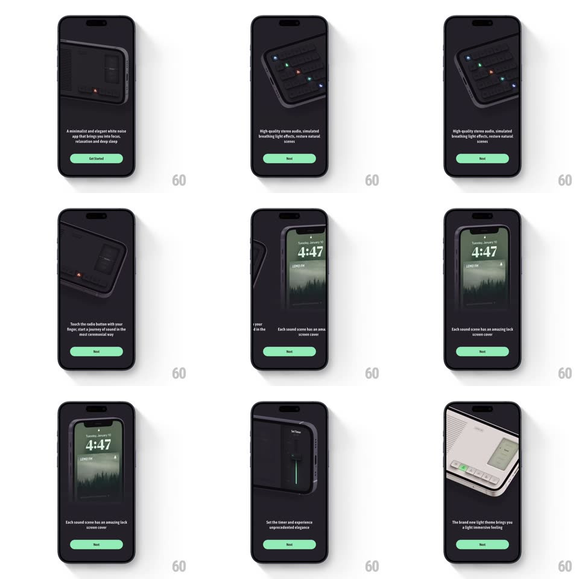

Media
Frame-by-frame

Rebuild this interaction 1:1: Lemo FM's onboarding - a dark flow where a photoreal 3D render of the app's radio device rotates smoothly between angles on each page (top-down LED view, angled front, lock-screen display, light-theme flip) while short feature copy and a mint Next button swap below.

Rebuild this interaction 1:1: Lemo FM's onboarding - a dark flow where a photoreal 3D render of the app's radio device rotates smoothly between angles on each page (top-down LED view, angled front, lock-screen display, light-theme flip) while short feature copy and a mint Next button swap below. ## Integration Integration: stack-agnostic spec - springs given as stiffness/damping, timed motions as duration + curve; map every value to your framework and animation library of choice. ## Scene Near-black pages: a large device render occupying the top two-thirds (dark rounded radio unit with a screen, speaker grille, and glowing accents), one or two lines of centered copy, and a mint-green pill button (Get Started / Next) at the bottom. ## Motion spec Pattern: paged 3D product showcase. - Swipe or tap Next: the device rotates on a continuous turntable arc to the next angle (rotateY +/-40deg with slight rotateX, 700ms, ease-in-out), never cutting - the render is a persistent 3D object. - Copy crossfades and slides (old text exits left/down, new text rises, 300ms, 80ms apart). - One page transitions to the light-theme device: the whole page background crossfades dark -> light with the device's own theme (500ms), the only page where chrome changes. - Idle: the device breathes (scale 1 <-> 1.015, 3s loop) and its LED accents twinkle on the top-down page. - Button stays fixed; only its label changes (Get Started on page 1, Next after). ## Calibration - Rotation direction is consistent (always turns the same way) - the device feels like one physical object on a stand. - The render is lit softly from above; the page gradient follows the light, not the device. ## Reduced motion Angles crossfade (400ms); no rotation. ## Don't miss - The mint green (#~A8E6B0 range) is the only saturated UI color - button and LED accents only. - The lock-screen page shows the device displaying a fullscreen forest wallpaper with time - a real "screen content" beat, not a chrome mock.